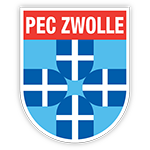
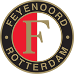
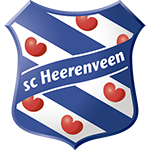
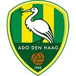
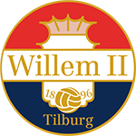

Teams |
Gespeelde Wedstrijden |
Punten |
|
|---|---|---|---|
| PSV |  |
12 | 33 |
Ajax |
 |
12 |
25 |
| AZ | 12 | 25 | |
| PEC Zwolle |  | 12 | 22 |
| F.C. Utrecht |  |
12 | 20 |
| Vitesse |  |
12 | 19 |
| Feyenoord |  | 12 | 19 |
| Heerenveen |  | 12 | 18 |
| Ado Den Haag |  | 12 | 17 |
| Excelsior | 12 | 17 | |
| Heracles |  |
12 | 15 |
| VVV Venlo |  |
12 | 14 |
| F.C. Groningen | 12 | 12 | |
| Sparta |  |
12 | 11 |
| Willem II |  | 12 | 10 |
| F.C. Twente |  |
12 | 9 |
| NAC |  |
12 | 9 |
| Roda JC |  |
12 | 7 |